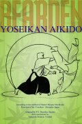

| The
Tom Bearden Website |
|
| The
Tom Bearden Website |
|
Yoseikan Aikido |
|
 Why read a book on martial arts written by a man who has not practiced the art for over 30 years, who is best-known for illuminating the foundations of physics as they apply to free energy? Because Tom Bearden’s penetrating analysis of everything he studies leads to unique insights. Aikido – often considered the “softest” of the martial arts – seeks to neutralize an opponent without doing harm, utilizing the natural flow of ki in relaxed movements that turn away or redirect an attacker’s force. In an almost magical dance, the attacker goes cartwheeling through the air while, paradoxically, the defender seems nearly stationary. Here, Tom Bearden’s studies of aikido shed light on basic principles that apply to everyday human life: our body mechanics, our balance, our senses, and our interactions with the natural world and the people around us. Going beyond the merely physical, he also touches on states of consciousness, meditation, and how these affect our ability to perceive and use subtle energy. Thus, the information is of interest not only for its application to the physical world, but also to the unseen world of ki. The same concepts apply equally across the broad spectrum of human activity – whether one is a carpenter building a house, a clinician observing a distressed patient, a housewife doing laundry, or a student crossing the street. Some of his wry observations about innate human reflexes – and how to evoke them for self defense – arose from watching wild creatures such as snakes, pumas, and birds during his boyhood in the back woods of Louisiana. Other observations on self-development pass along authentic insights that carry on a centuries-old Oriental tradition founded in Zen meditation. The functioning of the conscious and unconscious mind, the training of habits and reflexes, and insights into the nature of Self, are all addressed in this book. A sandan, or third-degree black belt, is hard-won in any martial art and is the culmination of many years of sustained effort. You will see a different side of Tom Bearden’s multi-faceted character, including origins of themes that profoundly influenced his later work. Whether you are a martial arts practitioner, an athlete, a scholar, a person interested in spiritual development, or simply a curious reader who has found inspiration in Tom Bearden’s writing on other topics, something fascinating awaits you in Yoseikan Aikido. Commemorative reissue of 1973 monograph – 103 pp. – soft cover – 6 x9" (15x23cm) |
USD 24.99 U.S. Orders only |
USD 29.99 International Orders incl. Canada |
||
|
Check Out |
||||